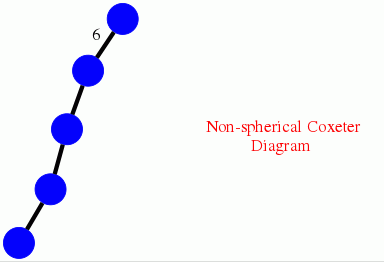

The following example computes the Bredon homology
underline H_0(W,cal R) = Z^21
for the infinite Coxeter group W associated to the Dynkin diagram shown in the computation, with coefficients in the complex representation ring.
gap> D:=[[1,[2,3]],[2,[3,3]],[3,[4,3]],[4,[5,6]]];; gap> CoxeterDiagramDisplay(D);

gap> C:=DavisComplex(D);; gap> D:=TensorWithComplexRepresentationRing(C);; gap> Homology(D,0); [ 0, 0, 0, 0, 0, 0, 0, 0, 0, 0, 0, 0, 0, 0, 0, 0, 0, 0, 0, 0, 0 ]
The following example computes the Bredon homology
underline H_0(SL_2(cal O_-3),cal R) = Z_2⊕ Z^9
underline H_1(SL_2(cal O_-3),cal R) = Z
for cal O_-3 the ring of integers of the number field Q(sqrt-3), and cal R the complex reflection ring.
gap> R:=ContractibleGcomplex("SL(2,O-3)");; gap> IsRigid(R); false gap> S:=BaryCentricSubdivision(R);; gap> IsRigid(S); true gap> C:=TensorWithComplexRepresentationRing(S);; gap> Homology(C,0); [ 2, 0, 0, 0, 0, 0, 0, 0, 0, 0 ] gap> Homology(C,1); [ 0 ]
The following example computes the Bredon homology
underline H_0(G,cal R) = Z^17
for G the second crystallographic group of dimension 4 in GAP's library of crystallographic groups, and for cal R the Burnside ring.
gap> G:=SpaceGroup(4,2);; gap> gens:=GeneratorsOfGroup(G);; gap> B:=CrystGFullBasis(G);; gap> R:=CrystGcomplex(gens,B,1);; gap> IsRigid(R); false gap> S:=CrystGcomplex(gens,B,0);; gap> IsRigid(S); true gap> D:=TensorWithBurnsideRing(S);; gap> Homology(D,0); [ 0, 0, 0, 0, 0, 0, 0, 0, 0, 0, 0, 0, 0, 0, 0, 0, 0 ]
generated by GAPDoc2HTML